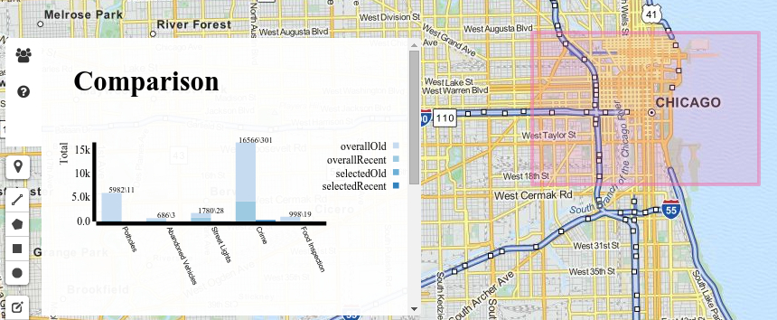

How-To
Running the Application
Project 3 is a data visualization application on real-time feeds of Chicago 3-11 data (potholes, abandoned vehicles, etc.), CTA Bus Tracker data, and Divvy Bike data. On this page, we will describe both how to use the application and what things can be accomplished with the application.To run the application, simply click on "Run this App" in the Navigation panel above. Here, you will find the map of Chicago (using OpenStreetMap), along with control buttons\configurable settings on the right hand and left hand sides of the screen. The image below displays this initial screen.
Application Controls - Left Tool Bar
There are 5 primary control types in the left tool bar as depicted in the image below. The user can click the current location to get his or her current location on the map. If a user wants to see, for example, potholes in a specific area of Chicago, he\she can click on the "Potholes" toggle button on the toobar on the right hand side of the screen, "Viewable Data" and then draw a shape from the left hand side tool bar, "Draw Shapes Bar". We also provide the user with zoom control using the "+" and "-" buttons in the "Zoom Control Bar". Finally, if a user would like to delete a shape that he\she drew using "Draw Shapes Bar", it is possible to do so by using th e"Edit Shapes Bar". We describe each control type in more detail below. After the user draws a shape, the user can actually analyze generated visualization graphs using the graph icon button on the "Information Bar". This is a very useful feature if the user would like to compare crime for a specifically selected area versus the entire city of Chicago, or even comparing other datasets such as potholes, abandoned vehicles, etc.
- Current Location simply zooms into the map to the current location of the user.
- Draw Shapes Bar gives you three options for drawing a shape on the map. Using your mouse, you can draw a three-sided polygon by clicking on the first button, the second allows you to draw a rectangle by selecting 4 sides, and finally the last shape button enables you to draw a circle.
- Edit Shapes Bar enables the user to delete or resize a shape that was drawn earlier using "Draw Shapes Bar". For deleting, the user can first click the "delete" button, then using the mouse, click on the shape to delete, and finally click the save button. For resizing, the user can first click the "edit" button, then using the mouse, resize the shape on the map, and finally click the save button.

- Information Bar contains three buttons. The first two buttons contain simple textual information regarding the name of the team members and a quick-start help guide. The third button displays two visualization graphs once the user draws a shape on the map.  The "311 Bar Chart" is a bar chart that has been grouped by overall data for entire Chicago versus selected data for the shapes drawn on the map. It is also stacked by old (at least 1 week old, up to 1 month old) versus new (within 1 week) for potholes, abandoned vehicles, street lights, and food inspection. Note that for crime, the threshold for old versus new is actually 2 weeks instead of 1 week. For easy reading, we also provide the actual raw numbers for each bar on the chart (that is, for example "Potholes" in the screen shot has 598 total potholes in the entire city versus 11 potholes in the selected region, and since there is no darker shade of blue on the bar, that implies that all of the data is at least 1 week old, up to 1 month old). The "Crime Dist. Bar Chart" is a bar chart that has been grouped by overall data for entire Chicago versus selected data for the shapes drawn on the map. It is also stacked by old (at least 2 weeks old, up to 1 month old) versus new (within 2 weeks). The graph basically is a breakdown of the crime in the city versus selected area in more detail (burglary, narcotics, etc.). For easy reading, we also provide the actual raw numbers for each bar on the chart (that is, for example "burglary" in the screen shot has 882 total occurrences in the entire city versus just 9 reported incidents in the selected region, and since there is a small portion of darker shade of blue on the bar, that implies that most of the data is at least 2 weeks old, up to 1 month old).
- Zoom Control Bar


Application Controls - Right Tool Bar
There are four primary control types in the right tool bar as depicted in the image below. We describe each control type in more detail below.- Map Views describes the two different types of map views, including aerial (ie, satellite) and streets views. You have already seen the default street view screen shots above. Below is a screen shot for aerial view.
- Community View adds a community layer to the Chicago area representing all 77 communities, which are then each clickable to obtain the name of the corresponding community.
- Viewable Data is used to toggle various datasets on the Chicago map. For example, if I would like to see the latest information on potholes on the map, I would toggle "Potholes". These datasets will be described in greater detail in the "Project Data" section. There are
- Data Filters